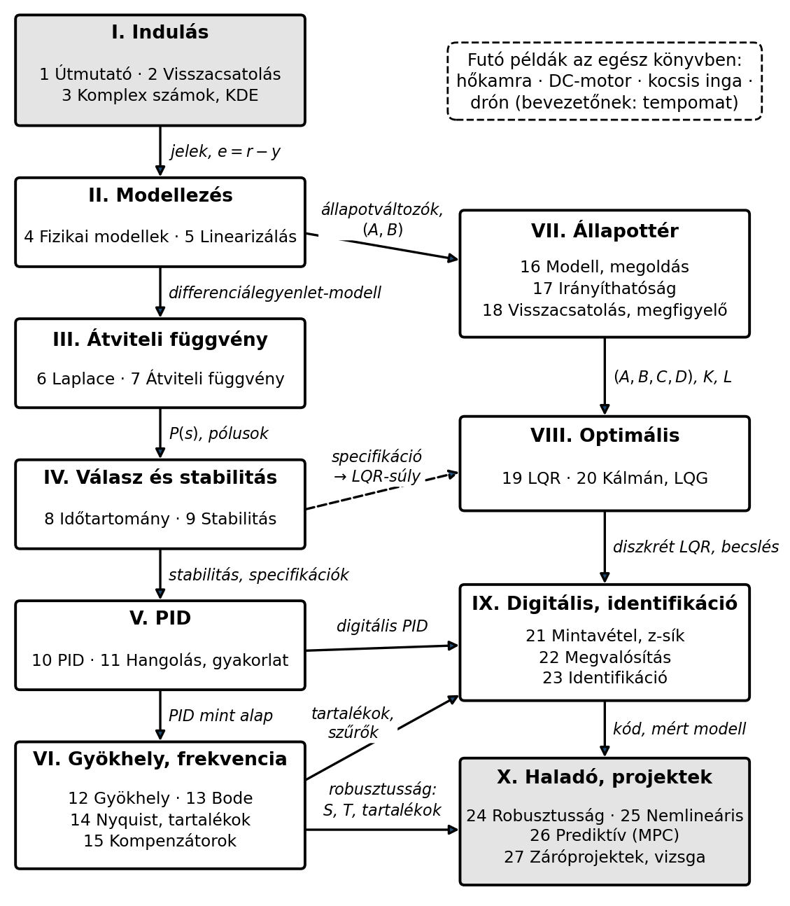
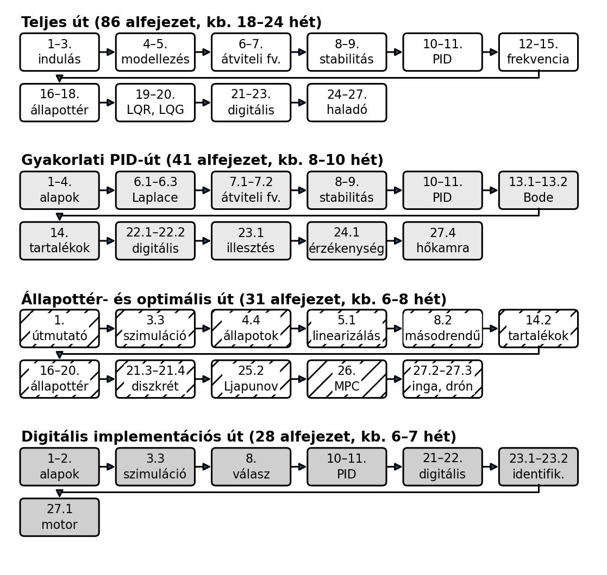
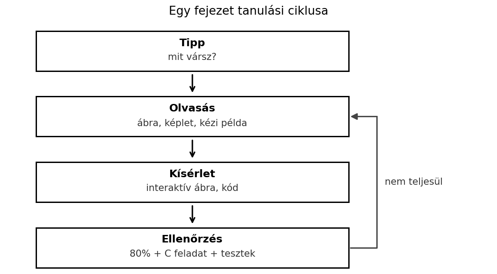
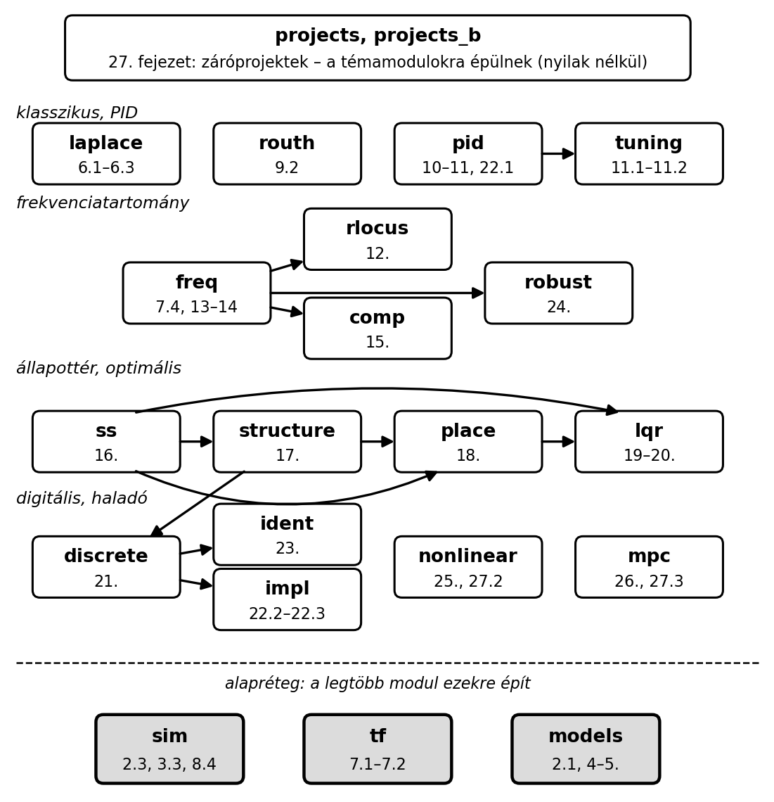

Egy autó tempomatja (cruise control) emelkedőn is tartja a beállított sebességet. Egy drón széllökés után visszatér a kívánt magasságba. Egy hőkamra órákon át fél fokon belül marad, miközben valaki kinyitja az ajtaját. Mindhárom ugyanarra a gondolatra épül: mérjük, ami történik, hasonlítsuk össze azzal, amit szeretnénk, és a különbség alapján avatkozzunk be. Ez a visszacsatolás (feedback), a szabályozáselmélet (control theory) központi fogalma.
A könyv a következő vezérkérdésekre tanít meg válaszolni:
Érdemes azt is látni, mire nem válaszol a könyv. Nem tanít elektronikát vagy érzékelőtervezést, nem tárgyalja a biztonsági szabványokat, és a nemlineáris, a sztochasztikus és a többváltozós szabályozásból csak annyit mutat meg, amennyi a gyakorlati tervezéshez szükséges. Az adaptív és a megerősítéses tanuláson alapuló szabályozás nem témája.
A könyv kiindulópontja a nulla: szabályozástechnikai előismeretet nem feltételez. A célja viszont a mesterszint: a végén egy valós dinamikus rendszerhez modellt építesz vagy mérésből illesztesz, szabályozót tervezel hozzá, ellenőrzöd, hogy stabil és robusztus-e, és tesztelt kódként megvalósítod.
Mielőtt tovább olvasol, gondold végig: reggel beállod a zuhany hőmérsékletét. A csaptelep és a vízmelegítő között hosszú cső van, ezért a tekerés hatását csak néhány másodperc múlva érzed. Mi történik, ha türelmetlenül, nagy mozdulatokkal igazítasz?
Valószínűleg ismered a választ: forró, hideg, forró, hideg. Pedig minden mozdulatod „helyes irányú” volt: ha fáztál, melegebbre tekertél. A baj az, hogy a hatás késve érkezett, a javításod pedig túl nagy volt. Ebben az egy helyzetben benne van a könyv nagy része: az alapjel (a kellemes hőmérséklet), a mérés (a bőröd), a szabályozó (te), a beavatkozás (a csap), a holtidő (a cső), a zavar (valaki a lakásban megnyitja a hideg vizet), és a visszacsatolás veszélye, a lengés. A könyv azt tanítja meg, hogyan lehet előre kiszámolni, mekkora mozdulat még biztonságos.
A gondolat régebbi, mint az elmélet. James Watt gőzgépeinek centrifugális regulátora a 18. század végén már visszacsatolással tartotta a fordulatszámot: a gyorsabban forgó golyók kifelé lendültek és fojtották a gőzt. Kiderült, hogy az ilyen szerkezetek néha lengeni kezdenek; James Clerk Maxwell 1868-as On Governors tanulmánya az elsők között vizsgálta matematikailag, mikor stabil egy regulátor. A 20. században a telefonerősítők hozták a következő ugrást: Harold Black negatív visszacsatolású erősítője, Harry Nyquist stabilitási kritériuma [S-NYQUIST32] és Hendrik Bode frekvenciatartománybeli módszerei. Az 1960 körüli fordulatot Rudolf Kálmán nevéhez kötjük: az állapottér, az irányíthatóság, az optimális szabályozás és a Kálmán-szűrő [S-KALMAN60] adta a mai modern elmélet vázát.
A tíz rész egymásra épül. A következő táblázat a nyomtatott fejezetszámokat adja meg (egy fejezet több alfejezetből áll; az „2.1” a 2. fejezet első alfejezete).
| Rész | Fejezetek | Mire ad választ |
|---|---|---|
| I. Indulás | 1–3. | mi a visszacsatolás; milyen matematika kell hozzá |
| II. Modellezés | 4–5. | hogyan írjuk le differenciálegyenlettel a folyamatot, és meddig érvényes |
| III. Átviteli függvény | 6–7. | hogyan számolunk algebrával a differenciálegyenletek helyett |
| IV. Válasz és stabilitás | 8–9. | milyen lesz a válasz, és stabil-e a zárt kör |
| V. PID | 10–11. | a leggyakoribb ipari szabályozó, hangolása és gyakorlati csapdái |
| VI. Gyökhely, frekvencia | 12–15. | tervezés a pólusok és a frekvenciaválasz alapján |
| VII. Állapottér | 16–18. | több belső változó egyszerre: visszacsatolás és megfigyelő |
| VIII. Optimális | 19–20. | LQR, Kálmán-szűrő, LQG |
| IX. Digitális, identifikáció | 21–23. | mintavétel, kód, modell mérési adatból |
| X. Haladó, projektek | 24–27. | robusztus, nemlineáris és prediktív szabályozás; négy projekt |
Az ív tehát: visszacsatolás → modellezés → átviteli függvény → időtartomány és stabilitás → PID → gyökhely és frekvenciatartomány → állapottér → LQR/LQG → digitális szabályozás és identifikáció → robusztus, nemlineáris és prediktív szabályozás → záróprojektek. Az alábbi térkép megmutatja, melyik rész mit „ad tovább” a következőknek.

Két ág látszik. A bal oldali a klasszikus út: egy bemenet, egy kimenet, átviteli függvény, PID, Bode- és Nyquist-diagram. A jobb oldali a modern út: állapottér, optimalizálás, becslés. A könyv újra és újra átjár a kettő között, mert ugyanannak a rendszernek két nézetét adják. Ha egy konkrét fejezet érdekel, a következő interaktív ábra megmutatja, mit kell előtte tudni, és mi épül rá.
Néhány mondat végigkíséri a könyvet. Nem kell most értened őket; amikor visszatérnek, név szerint hivatkozunk rájuk.
A fogalmakat néhány, mindig ugyanazokkal a paraméterekkel szereplő
rendszeren mutatjuk be. A paraméterek egy helyen, a
controlkit.models modulban vannak.
| Példa | Beavatkozás → kimenet | Mire való |
|---|---|---|
| tempomat | hajtóerő → sebesség | a bevezető fejezetek legegyszerűbb példája (2. fejezet, 8.1) |
| hőkamra | fűtés (0–100%) → hőmérséklet | lassú, holtidős folyamat; PID-hangolás |
| DC-motor | armatúrafeszültség → szögsebesség vagy szög | pozíciószabályozás, kompenzátorok |
| fordított inga a kocsin | erő a kocsin → kocsihely és ingaszög | instabil rendszer; állapottér, LQR |
| drón magassága | tolóerő → magasság | telítés, zavar, prediktív szabályozás |
A tempomat, a motor és az inga adatai egy ismert egyetemi oktatóanyagból (CTMS) származnak [S-CTMS]; a hőkamra (erősítés K/%, időállandó s, holtidő s) és a drón (tömeg kg, tolóerő legfeljebb N) kitalált, didaktikai értékek, nem egy konkrét eszközé.
Továbbvitt eredmény. A négy fő futó példa és a bevezető tempomat szerepe végigvonul a könyvön: az állapotváltozós modelljeiket Állapotváltozós alak és a futó példák modelljei írja fel, a motor, az inga, a drón és a hőkamra pedig egy-egy záróprojekt főszereplője (1. záróprojekt: DC-motor pozíciószabályozása, 2. záróprojekt: fordított inga a kocsin, 3. záróprojekt: drón magasságtartása, 4. záróprojekt: hőmérséklet-szabályozás identifikációval).
A legtöbb alfejezet ugyanazt a sorrendet követi, így mindig tudod, hol tartasz:
controlkit
csomaggal, futtatott kimenettel.A bevezető alfejezetek, a záróprojektek és a vizsgafeladatsor lazábbak.
Haladás közben először tippelj, mielőtt elolvasod a választ; számold végig kézzel a számpéldát; írd be és módosítsd a kódot; és oldd meg a feladatokat a megoldás megnyitása nélkül. A szabályozáselmélet olvasva meggyőző, de csak számolva és kísérletezve rögzül.
A részletes jelölések a képletgyűjteményben vannak; itt a legfontosabbak, amelyek az elejétől érvényesek:
0.5) áll.Továbbvitt eredmény. Az alfejezetek fenti szerkezete és ezek a jelölési alapelvek adják a Tanulási útvonalak és belépő teszt továbblépési szabályának, A labor és a controlkit csomag kódjának és a Nyílt és zárt hurok: miért visszacsatolás? első modelljének keretét.
A könyv akkor érte el a célját, ha egy új feladatnál végig tudod járni ezt az utat: leírod a folyamat modelljét (vagy mérésből illeszted), megfogalmazod a követelményeket számokkal, tervezel egy szabályozót, ellenőrzöd a stabilitást és a robusztusságot (mekkora modellhibát bír el a kör), a beavatkozó jelet is megvizsgálod, majd digitális kódként megvalósítod és a pontosabb, nemlineáris modellen kipróbálod. A kompetenciatérkép (KOMPETENCIATERKEP.md) ezt nyolc ellenőrző pontra bontja; érdemes időnként visszanézni, hol tartasz.
A szimulációban kipróbált szabályozó valódi eszközön csak óvintézkedésekkel próbálható ki: áramkorlát, vészleállító, véghelyzet-kapcsoló, fűtésnél független túlmelegedés-védelem, drónnál propeller nélküli vagy rögzített tesztpad. Ezek nem helyettesítik a vonatkozó szabványokat.
Minden ábrának három kiadása lehet. A HTML változatban az interaktív ábrák csúszkái és gombjai működnek, az animációk lejátszhatók, a statikus kép pedig lenyitható. A PDF és az EPUB változatban a statikus kép (animációnál időbélyeges képkocka-sor) látszik, a szöveg pedig ábra nélkül is érthető marad. A lapok kapcsolat nélkül, a böngészőben futnak.
A kísérő controlkit csomag NumPy-ra és SciPy-ra épül; a
felépítését A labor és a controlkit
csomag mutatja be. Előismeretként egyváltozós kalkulus,
mátrixszorzás és alapszintű Python-olvasás kell. Ha valamelyik hiányzik,
a gyűjtemény Kalkulus és analízis (books/dsk-calculus-analysis)
és Lineáris algebra kezdőknek (books/dsk-linear-algebra) könyve
pótolja. A komplex számokat, a differenciálegyenleteket és a numerikus
szimulációt a 3. fejezet átismétli. A Kálmán-szűrő a
gyakorlatban (books/dsk-kalman-tracking) ennek a könyvnek a
duális párja: ott az állapot becslése, itt a
befolyásolása a téma, és a 20. fejezet össze is kapcsolja a kettőt. A
jelfeldolgozáshoz, az optimalizáláshoz és a numerikus módszerekhez a
gyűjtemény haladó kötetei (advanced-books) adnak folytatást.
A szabályozáselmélet azt vizsgálja, hogyan érjük el és tartsuk a kívánt viselkedést visszacsatolással, zavarok, zaj, modellhiba és beavatkozási korlátok mellett, anélkül hogy a kör instabillá válna. A könyv tíz része a visszacsatolástól a modellezésen, az átviteli függvényen, a stabilitáson, a PID-en, a frekvenciatartományon, az állapottéren, az optimális és a digitális szabályozáson át a haladó módszerekig és négy záróprojektig vezet. A futó példák: tempomat, hőkamra, DC-motor, kocsis inga, drón. Az alfejezetek szerkezete állandó (motivációtól a megoldásokig), a visszacsatolás mindig negatív, . Az interaktív ábrák HTML-ben, statikus változatuk PDF-ben és EPUB-ban látható.
A könyv 27 fejezete 86 alfejezetből áll; végigdolgozni több hónap. Nem mindenkinek kell azonnal az egész: egy folyamatirányítással foglalkozó mérnök előbb a PID-hangolást akarja jól tudni, egy robotikával foglalkozó fejlesztő az állapotteret és az optimális szabályozást, egy beágyazott programozó pedig azt, hogyan lesz a szabályozóból megbízható kód. Ez az alfejezet négy útvonalat ajánl, majd egy rövid belépő teszttel megmutatja, mit érdemes az elején átismételni.
Mielőtt továbbolvasol, írd le egy mondatban, mi a célod (például: „egy fűtött tartály hőmérsékletét akarom szabályozni mikrovezérlővel”). Ehhez a mondathoz választunk útvonalat.
Az alábbi ábra a fejezet.alfejezet számozást használja: a „6.1–6.3” a 6. fejezet első három alfejezete. A nyilak az ajánlott sorrendet mutatják.

| Útvonal | Kinek | A végén tudod | Becsült idő |
|---|---|---|---|
| Teljes út | aki rendszeresen, alapoktól tanul | a könyv minden módszerét | 18–24 hét |
| Gyakorlati PID-út | folyamatirányítás, automatizálás | PID tervezése, hangolása, kódja | 8–10 hét |
| Állapottér- és optimális út | robotika, mechatronika | állapotvisszacsatolás, LQR, LQG, MPC | 6–8 hét |
| Digitális implementációs út | beágyazott fejlesztő | PID és modellillesztés kódban | 6–7 hét |
Az időbecslés heti 4–5 alfejezettel számol. Egy alfejezet olvasással, számpéldával, kóddal és néhány feladattal körülbelül 2–4 óra; ez erősen függ az előismeretektől, ezért tekintsd durva tervnek, nem ígéretnek. A teljes és a PID-út idejét a kompetenciatérkép (KOMPETENCIATERKEP.md) adja meg, a másik kettőét ugyanezzel az ütemmel becsültük.
Teljes út. Az 1–27. fejezet sorrendben. A klasszikus rész (6–15.) és a modern rész (16–20.) ugyanazokat a rendszereket nézi kétféleképpen, ezért a teljes út adja a legtöbb átjárást. Ha egy hónapig tart a szünet, a visszatéréskor az utolsó három fejezet „Rövid összefoglaló” szakaszaival kezdj.
Gyakorlati PID-út. A modellezés és az átviteli függvény csak annyira, amennyire a hangoláshoz kell; utána a PID részletesen (10–11. fejezet), a frekvenciatartományból a Bode-diagram és a tartalékok, majd a digitális megvalósítás, az ugrásválaszból illesztett modell, az érzékenységi függvények, és zárásként a hőkamra-projekt. A gyökhely és az állapottér kimarad.
Állapottér- és optimális út. Annak, aki a klasszikus alapokat máshonnan ismeri. Az állapotváltozós alaktól a linearizáláson, az irányíthatóságon és a pólusáthelyezésen át az LQR-ig, a Kálmán-szűrőig és a prediktív szabályozásig; a végén a fordított inga és a drón.
Digitális implementációs út. Annak, aki a szabályozót mikrovezérlőn vagy beágyazott Linuxon futtatja: PID a gyakorlatban (telítés, integrátortelítés, előrecsatolás), mintavételezés, késleltetés, kvantálás, fixpontos számítás és modellillesztés, a végén a motorprojekt.
A rövidített utak kihagynak alfejezeteket, amelyekre egy későbbi rész hivatkozik. Ha egy alfejezet elején olyan előfeltételt látsz, amelyet kihagytál, olvasd el annak „Rövid összefoglaló” szakaszát, és csak akkor a teljes alfejezetet, ha az összefoglaló nem elég. A leggyakoribb ilyen helyek:
Útvonalat bármikor válthatsz: a PID-út a teljes út részhalmaza, így később a kihagyott fejezetekkel folytathatod.
Dóra beágyazott fejlesztő, egy motorvezérlőn dolgozik, és hetente körülbelül 9 órát tud tanulni. A digitális implementációs utat választja. Egy alfejezetet 3 órával számolva hetente 3 alfejezet fér bele, így a 28 alfejezet , tehát nagyjából 10 hét. Ez hosszabb a táblázat 6–7 hetes becslésénél, mert Dóra lassabb tempót tervez, nem azért, mert a terv rossz. A saját tervedet ugyanígy számold: heti órák osztva az alfejezetenkénti órákkal, majd az útvonal alfejezetszáma osztva ezzel. Két hét után nézd meg a tényleges tempót, és igazíts rajta.
Egy hasznos szabály: heti egy alkalmat tarts fenn ismétlésre (egy korábbi alfejezet egy feladata megoldás nélkül). Az ismétlés nélkül olvasott levezetések gyorsan elhalványulnak.
A teszt nem vizsga, hanem térkép: azt mutatja meg, hol lesz nehezebb az olvasás, ha most nem frissítesz. Számolj papíron, számítógép nélkül (a 10–12. kérdésnél először tippeld meg a kimenetet, és csak utána futtasd). Körülbelül 30–40 perc. A megoldások az alfejezet végén vannak; ne nézd meg őket, amíg mindennel nem próbálkoztál. Egy választ akkor számíts helyesnek, ha nemcsak a végeredmény jó, hanem a gondolatmenetet is meg tudod indokolni.
Miért pont ezek a témák? Az exponenciális függvény írja le, hogyan cseng le egy zavar hatása; a komplex számok adják a lengő viselkedés nyelvét; a differenciálegyenlet maga a rendszermodell; a mátrixok és a sajátértékek az állapottér alapjai; a Python és a lépésenkénti számítás pedig a szimulációé.
Kalkulus és exponenciális függvény
Komplex számok és szögek (a képzetes egység jele , )
Mátrixok
Trigonometria
Python (import numpy as np)
s = 0; for k in [1, 2, 3]: s += k * k; print(s) (a ciklus
törzse a for sorában van)?x = np.array([1.0, 2.0]) és
D = np.array([[2, 0], [0, 3]]). Mi D @ x, és
mi D * x?y = 1.0, majd háromszor egymás után:
y = y + 0.5 * (-y). Mennyi y a végén?Javítsd ki a tesztet a megoldások alapján. Jelöld be a helyes válaszokat a következő ábrán: témakörönként megmutatja a teendőt, és azt, hogy a 3. fejezet három ismétlő alfejezetét alaposan kell-e olvasnod.
| Hibás kérdés | Mit pótolj | Honnan |
|---|---|---|
| 1–2 | derivált, integrál, láncszabály | Kalkulus és analízis (dsk-calculus-analysis), majd 3.2 |
| 3–4 | , elsőrendű differenciálegyenlet | Lineáris differenciálegyenletek és a karakterisztikus egyenlet alaposan |
| 5, 6, 9 | poláris alak, szögek, periódus | Komplex számok és a komplex exponenciális alaposan |
| 7–8 | mátrixszorzás, determináns, sajátérték | Lineáris algebra kezdőknek (dsk-linear-algebra) |
| 10–11 | Python- és NumPy-alapok | A labor és a controlkit csomag és egy Python-bevezető |
| 12 | lépésenkénti (Euler-) számítás | Numerikus szimuláció: ODE-megoldók a szabályozásban alaposan |
A kompetenciatérkép szerinti belépési szint a kalkulus, a mátrixszorzás, a determináns, a trigonometria és az alapszintű Python-olvasás. A komplex számokat és a lineáris differenciálegyenleteket a 3. fejezet tanítja, ezért az 5–6. kérdés hibája nem baj, csak jelzés. Ha viszont a deriválás, az integrálás vagy a mátrixszorzás hiányzik, azt még az elején pótold a megadott könyvekből, különben a 4. fejezettől minden levezetés elakad.
A három ismétlő alfejezetről így dönts: ha a hozzá tartozó kérdések mind helyesek (3.1: 5, 6, 9; 3.2: 1–4; 3.3: 10–12), átfuthatod: olvasd el a rövid összefoglalót, és oldj meg egy B szintű feladatot. Ha bármelyik hibás, alaposan dolgozd végig. A teszt nem méri a karakterisztikus egyenletet és a numerikus megoldók pontosságát, ezért hibátlan eredmény esetén se hagyd ki a 3. fejezet összefoglalóit.
Továbbvitt eredmény. A belépő teszt eredménye szerinti pótlási javaslat: komplex számok → Komplex számok és a komplex exponenciális, differenciálegyenletek → Lineáris differenciálegyenletek és a karakterisztikus egyenlet, szimuláció → Numerikus szimuláció: ODE-megoldók a szabályozásban.
Egy fejezetet akkor zárj le, ha mindhárom teljesül:
python3 code/tests/run_tests.py).
A 80%-os küszöb szándékosan nem 100%: egy-egy bizonytalan kérdés nem akadály, ha tudod, hol keresd meg a választ. Ha viszont egy fejezetben több kérdés is bizonytalan, a következő fejezet még nehezebb lesz.
Négy útvonal közül választhatsz: teljes (18–24 hét), gyakorlati PID (8–10 hét), állapottér és optimális (6–8 hét), digitális implementáció (6–7 hét); a becslés heti 4–5 alfejezettel számol. A rövidített utak kihagyott előfeltételeit az összefoglalókból pótold. A belépő teszt eredménye megmutatja, melyik ismétlő alfejezetet (3.1: komplex számok, 3.2: differenciálegyenletek, 3.3: szimuláció) kell alaposan, és melyiket elég átfutni. Fejezetet akkor zárj le, ha az önellenőrzés legalább 80%-os, megoldottál egy C feladatot, és a tesztek zöldek.
1. A láncszabály szerint , így . Negatív, vagyis csökken.
2. .
3. . A felezés ideje: , azaz , ebből s. A s az időállandó (time constant): ennyi idő alatt a jel az -szeresére, körülbelül -szorosára csökken. A felezési idő ennél rövidebb, mert a felére csökkenéshez kisebb esés kell. Ez a fogalom a 8. fejezet elsőrendű rendszereinek kulcsa.
4. A megoldást alakban keressük. Behelyettesítve , ebből ; a kezdeti feltételből . Tehát , és . A esetben korlátlanul nő: ez az instabil viselkedés legegyszerűbb példája. A kitevő előjele dönt; ez a „pólus dönt” gondolat első alakja.
5. . A pont a második negyedben van, ezért a szög . Tipikus hiba az : az nem látja a negyedet, az igen.
6. Bővíts a nevező konjugáltjával: .
7. , . A mátrixszorzás nem felcserélhető; ez a soros kapcsolású rendszereknél is fontos lesz.
8. . A sajátértékek a egyenlet gyökei: , .
9. A körfrekvencia rad/s, a periódusidő s, a frekvencia Hz.
10–12. Számítógéppel ellenőrizve:
import numpy as np
s = 0
for k in [1, 2, 3]:
s += k * k
print("10.:", s)
x = np.array([1.0, 2.0])
D = np.array([[2, 0], [0, 3]])
print("11. D @ x =", D @ x)
print("11. D * x =", (D * x).tolist())
y = 1.0
for _ in range(3):
y = y + 0.5 * (-y)
print("12.:", y)10.: 14
11. D @ x = [2. 6.]
11. D * x = [[2.0, 0.0], [0.0, 6.0]]
12.: 0.125A @ mátrixszorzás, a * elemenkénti szorzás
(itt a NumPy a vektort minden sorra „ráteríti”, ez a broadcasting). A
12. kérdés minden lépésben felezi
-t:
.
Ez az
egyenlet Euler-módszeres megoldása
s lépésközzel; a pontos érték
lenne, a különbség a módszer hibája.
A könyv minden állításának ellenőrizhetőnek kell lennie: ha a szöveg
azt mondja, hogy egy szabályozó
s alatt áll be, akkor ezt le tudod futtatni a saját gépeden, meg tudod
változtatni a paramétert, és látod, mi történik. Ehhez egy egyszerű
Python-környezet és a könyv kísérő csomagja, a controlkit
kell. Ez az alfejezet felállítja a környezetet, átismétli a NumPy- és
SciPy-alapokat, amelyek nélkül a későbbi kód nehezen olvasható, és
bemutatja a csomag felépítését. Általános Python-bevezetést nem
tartalmaz: alapszintű Python-olvasást feltételezünk.
Szükséges: Python 3.11 vagy újabb, NumPy, SciPy,
matplotlib és SymPy. A verzióhatárokat a könyv
requirements.txt fájlja rögzíti. Ajánlott virtuális
környezetben (virtual environment, venv) dolgozni: ez egy külön
mappa a csomagoknak, így a könyv függőségei nem keverednek a rendszer
többi Python-programjával. A könyv könyvtárából
(advanced-books/adv-control-theory):
python3 -m venv .venv
source .venv/bin/activate # Windows (PowerShell): .venv\Scripts\Activate.ps1
python -m pip install -r requirements.txt
python code/tests/run_tests.pyEgyes Linux-disztribúciókon a venv modul külön csomagból
telepíthető (Debian és Ubuntu alatt python3-venv). Az
utolsó parancs a csomag tesztjeit futtatja a szabványos
unittest modullal; a kimenet végén egy
Ran … tests sor és az OK szó jelenik meg. A
tesztek száma a csomag bővülésével nő. Ha FAILED jelenik
meg, először azt ellenőrizd, hogy a virtuális környezet aktív-e, és a
SciPy abban telepítve van-e
(python -c "import scipy; print(scipy.__version__)").
A csomag a code/ mappában van, ezért a saját
szkriptedben fel kell venned a Python keresési útjára (vagy a szkriptet
PYTHONPATH=code környezeti változóval kell indítanod). Az
alábbi példa a bevezető tempomatot szimulálja: egy
kg-os autó,
N·s/m sebességarányos ellenállás, állandó
N hajtóerő, álló helyzetből:
import sys
sys.path.insert(0, "code")
import numpy as np
from controlkit import models, sim
car = models.Cruise() # m = 1000 kg, b = 50 N*s/m
t = np.linspace(0.0, 120.0, 1201) # 0,1 s-os rács
X = sim.simulate(car.rhs, [0.0], t, u=1000.0) # RK4, állandó hajtóerő
v = X[:, 0]
print(f"v(20 s) = {v[200]:.3f} m/s")
print(f"v(120 s) = {v[-1]:.3f} m/s, végérték u/b = {1000.0 / car.b:.1f} m/s")v(20 s) = 12.642 m/s
v(120 s) = 19.950 m/s, végérték u/b = 20.0 m/sA sim.simulate az
differenciálegyenletet lépésenként, negyedrendű Runge–Kutta-módszerrel
(RK4) oldja meg; az eredmény egy tömb, amelynek soronként az időpontok,
oszloponként az állapotok. A
s itt az időállandó
():
ennyi idő alatt a sebesség a végérték
-át
éri el.
Mielőtt tovább olvasol, tippeld meg: ha a tempomat
hajtóerejét a kétszeresére,
N-ra emelnéd, mi változna: a végérték, az időállandó, vagy mindkettő? A
lineáris modell szerint a válasz arányosan skálázódik: a végérték
m/s lenne, az
s időállandó viszont nem változik. Írd át a u=1000.0
értéket, futtasd le, és ellenőrizd. Ezt a „tipp, számolás, futtatás”
ciklust érdemes minden alfejezetben megtartani.
A könyv (és a NumPy, a scipy.signal) konvenciója: egy
polinomot az együtthatói adnak meg, a legmagasabb fokú taggal
kezdve. Az [1, 2, 5] tehát
,
a [2, 0, -3] pedig
(a hiányzó tag helyén nulla áll).
p = [1, 2, 5] # s^2 + 2 s + 5
print("p(j) =", np.polyval(p, 1j)) # behelyettesítés s = j-nél
print("gyökei =", np.roots(p))
print("(s+1)(s+2) =", np.polymul([1, 1], [1, 2]))
print("konvolúció =", np.convolve([1, 1], [1, 2]))p(j) = (4+2j)
gyökei = [-1.+2.j -1.-2.j]
(s+1)(s+2) = [1 3 2]
konvolúció = [1 3 2]A polinomszorzás az együtthatótömbök konvolúciója, ezért a két utolsó
sor azonos. A 1j a Python képzetes egysége; a gyökök
komplex számok, amelyekről a Komplex számok és a
komplex exponenciális alfejezet beszél.
A NumPy-tömbnek alakja (shape) van. Egy
-es
mátrix alakja (2, 2), egy kételemű vektoré
(2,) (egydimenziós, se sor, se oszlop). A mátrixszorzás
jele @, az elemenkénti szorzásé *.
A = np.array([[0.0, 1.0], [-6.0, -5.0]])
x = np.array([1.0, 0.0])
print(A.shape, x.shape, (A @ x).shape)
print("A @ x =", A @ x)
print("A * x =", (A * x).tolist())
print("sajátértékek:", np.linalg.eigvals(A))(2, 2) (2,) (2,)
A @ x = [ 0. -6.]
A * x = [[0.0, 0.0], [-6.0, -0.0]]
sajátértékek: [-2. -3.]Az A * x nem hibázik, hanem mást számol: az
x elemeivel az oszlopokat szorozza. Ez a leggyakoribb
csendes hiba a szabályozási kódban.
A scipy.signal.lti folytonos lineáris rendszert ír le
(átviteli függvény együtthatóival), a
scipy.integrate.solve_ivp változó lépésközű
differenciálegyenlet-megoldó, a scipy.linalg.expm pedig a
mátrixexponenciális
.
Itt mindhárom ugyanazt az egyszerű rendszert,
,
számolja, amelynek pontos megoldása
:
from scipy import integrate, linalg, signal
t = np.array([0.0, 1.0, 2.0])
_, y_signal = signal.step(signal.lti([1.0], [1.0, 1.0]), T=t)
sol = integrate.solve_ivp(lambda ti, yi: -yi + 1.0, (0.0, 2.0), [0.0], t_eval=t,
rtol=1e-8, atol=1e-10)
y_expm = [1.0 - linalg.expm(np.array([[-1.0]]) * ti)[0, 0] for ti in t]
print("signal.step :", np.round(y_signal, 6))
print("solve_ivp :", np.round(sol.y[0], 6))
print("expm :", np.round(y_expm, 6))
print("pontos :", np.round(1.0 - np.exp(-t), 6))signal.step : [0. 0.632121 0.864665]
solve_ivp : [0. 0.632121 0.864665]
expm : [0. 0.632121 0.864665]
pontos : [0. 0.632121 0.864665]A solve_ivp alapértelmezett toleranciája durvább
(rtol=1e-3); a könyvben ezért mindig kiírjuk a megoldót és
a pontosságot. A megoldók részleteit a Numerikus
szimuláció: ODE-megoldók a szabályozásban alfejezet tárgyalja.
A csomag kicsi, tankönyvi implementációkból áll: minden függvény rövid, magyar docstringgel, a könyv jelöléseivel, és ahol van SciPy-megfelelője, a teszt összeveti vele. Néhány konvenció, amelyet érdemes megjegyezni, mert a kód olvasásakor végig érvényes:
f(t, x, u) alakú
függvény: idő, állapotvektor, beavatkozás, és visszaadja az
vektort (pl. car.rhs);Ha nem emlékszel egy függvény paramétereire, a Pythonban a
help(sim.step_info) kiírja a docstringjét, a tesztfájlok
(code/tests/) pedig működő használati példákat
tartalmaznak.

A nyíl az alap modultól a ráépülő
modul felé mutat. Az alsó három modul (sim,
tf, models) az alapréteg: a legtöbb modul
ezekből importál, ezért ezeknek a nyilait nem rajzoltuk be.
| Modul | Mire való | Példa a függvényeire |
|---|---|---|
sim |
szimuláció, minőségi jellemzők | rk4_step, simulate,
simulate_loop, step_info |
tf |
átviteli függvények | TransferFunction, closed_loop,
feedback |
models |
a futó példák paraméterei | Cruise, ThermalChamber,
DCMotor, CartPendulum |
laplace, routh |
részlettörtek, stabilitási táblázat | partial_fractions, routh_table |
pid, tuning |
PID és hangolás | PID, DiscretePID, simc_pi,
relay_experiment |
freq, rlocus, comp |
Bode, Nyquist, gyökhely, kompenzátorok | margins, rlocus,
design_lead |
ss, structure, place,
lqr |
állapottér, LQR, Kálmán | tf2ss, ctrb, acker,
lqr, lqg |
discrete, impl, ident |
mintavétel, kód, identifikáció | c2d, FixedPointPI,
fit_arx |
robust, nonlinear, mpc |
haladó témák | hinf_norm, estimate_roa,
LinearMPC |
projects, projects_b |
a záróprojektek forgatókönyvei | motor_report, pendulum_report,
drone_metrics, identify_chamber |
A csomag leírása a code/README.md. A záróprojektek (27.
fejezet) forgatókönyveit és kiértékelő függvényeit két külön modul, a
projects és a projects_b tartalmazza. A
paraméterek egy helyen, a models modulban vannak: ha egy
fejezet a DC-motorról beszél, ugyanazt a modellt használja, mint
bármelyik másik.
Pythonban létezik szabályozástechnikai könyvtár, a python-control [S-PYCONTROL]. Itt mégsem építünk rá kötelezően, két okból: a saját, rövid kódban látod, mit csinál egy-egy módszer, és a könyv eredményei egy kevesebb függőséggel is reprodukálhatók. Ha a python-control telepítve van, összevetésre használhatod; a jelölései (pl. az erősítési tartalék egysége) eltérhetnek, ezért mindig nézd meg a dokumentációját. Egyetlen eredmény sem függ tőle, és a cvxpy, az OSQP vagy a slycot sem kell.
Az átviteli függvényt a 7. fejezet vezeti be; itt csak annyi kell,
hogy a tempomat
átvitele
,
és a closed_loop egy visszacsatolt kört állít össze belőle.
A
N·s/m erősítésű arányos szabályozóval:
from controlkit.tf import TransferFunction as TF, closed_loop
P = models.Cruise().tf() # 1 / (1000 s + 50)
cl = closed_loop(P, TF([450.0], [1.0])) # arányos szabályozó
t = np.linspace(0.0, 20.0, 2001)
y = cl["T"].step(t) # alapjel-ugrás 0 -> 1 m/s
info = sim.step_info(t, y, final=cl["T"].dcgain())
print("pólus:", cl["T"].poles(), " végérték:", round(cl["T"].dcgain(), 3))
print(f"t_r = {info.rise_time:.2f} s, t_s = {info.settling_time:.2f} s, "
f"túllövés = {info.overshoot:.1f} %")pólus: [-0.5] végérték: 0.9
t_r = 4.39 s, t_s = 7.83 s, túllövés = 0.0 %A végérték : a sebesség nem éri el teljesen az alapjelet. Ennek okát a Első szimuláció: arányos szabályozás egy tárolós folyamaton alfejezet vezeti le.
Ahol zajt vagy véletlen jelet szimulálunk, a véletlenszám-generátor magját (seed) rögzítjük, így mindenki ugyanazt a számsort kapja:
a = np.random.default_rng(seed=7).normal(size=3)
b = np.random.default_rng(seed=7).normal(size=3)
print("azonos:", np.array_equal(a, b), np.round(a, 3))azonos: True [ 0.001 0.299 -0.274]A pontos számok a NumPy generátorának verziójától függhetnek; az egy gépen belüli ismételhetőség a lényeg.
Az ábrák a figures/src/ szkriptjeiből készülnek: egy
szkript ugyanabból a számításból állítja elő a statikus képet
(figures/img/) és, ha van, az interaktív lapot
(figures/html/). A böngészős lapok a
figures/web/ JavaScript-segédfüggvényeivel számolnak,
amelyeket paritásteszt vet össze a Python eredményeivel. A lapok
internetkapcsolat nélkül, fájlból megnyitva is működnek. Egy ábrát így
állíthatsz elő újra:
python3 figures/build_figures.py --only ct002
python3 code/check_chapters.py ct002Az első parancs a ct002 ábráit, a második a fejezet
kódblokkjait futtatja, és összeveti a kimenetüket a könyvben
közölttel.
Ha egy fejezet kódját módosítod, dolgozz a code/ mappán
kívüli saját fájlban, hogy a csomag és a tesztek érintetlenek
maradjanak. Rajzoláshoz a matplotlib alapfüggvényei elegendők
(plt.plot(t, v), plt.xlabel("t (s)"),
plt.savefig("kiserlet.png")); grafikus felület nélküli
gépen a mentés a biztos út. Írd fel a paramétereket, a lépésközt és a
kapott számokat is: egy hét múlva csak ezekből tudod megismételni a
kísérletet. Ha egy fejezet eredménye nálad eltér, először a NumPy és a
SciPy verzióját és a paramétereket hasonlítsd össze a könyvével.
Továbbvitt eredmény. A controlkit
felépítését (polinom magas fok elöl, sim szimulátor, közös
models paraméterek) és a tesztek futtatását minden kódot
tartalmazó alfejezet használja, elsőként a Első
szimuláció: arányos szabályozás egy tárolós folyamaton és a Numerikus szimuláció: ODE-megoldók a
szabályozásban.
method="euler"
kapcsolóval és 0,1 s-os ráccsal, majd egy 10
s-os ráccsal (np.linspace(0, 120, 13)). Mit látsz
-nál?
A pontos érték
m/s. A durva rácson az Euler-módszer
m/s-ot ad (két lépés, mindkettő a lépés eleji gyorsulással), az RK4
viszont ugyanazzal a lépésközzel is
m/s körül marad
().
A lépésköz és a módszer megválasztása tehát a szimuláció eredményének
része.closed_loop példában írd át a 450
erősítést 950-re. Tippeld meg előre a végértéket és a
pólust (a
hurok statikus erősítése
).
Eredmény: pólus
,
végérték
;
a nagyobb erősítés gyorsabb és pontosabb választ ad ebben a
modellben.figures/html/ct000-fuggosegek.html fájlt a
böngészőben, kapcsolat nélkül is, és nézd meg, melyik fejezetek épülnek
erre az alfejezetre.ModuleNotFoundError: No module named 'controlkit'
→ a code/ nincs a keresési úton → indítsd a szkriptet a
könyv könyvtárából, és tedd az elejére a
sys.path.insert(0, "code") sort.No module named 'scipy' → más Python
fut, mint amelyikbe telepítettél → aktiváld a .venv-et;
ellenőrizd a which python kimenetét.[5, 2, 1] a
)
→ a legmagasabb fokú együttható legyen elöl.* a
@ helyett → írd ki a shape-eket.np.array([1, 2]) egész típusú; törtet beleírva elveszik a
törtrész → írj [1.0, 2.0]-t.A. Add meg együtthatótömbként a polinomot, és számold ki az értékét -nél.
A. Legyen K alakja
(1, 4), x alakja (4,). Milyen
alakú K @ x, és hogyan kapsz belőle egyetlen
számot?
B. Mekkora a DC-motor
(models.DCMotor().tf_speed()) állandósult szögsebessége
V armatúrafeszültség mellett?
C (programozós). Számold ki a
solve_ivp-vel az
,
megoldását
-ben
rtol=1e-3 (az alapértelmezett érték) és
rtol=1e-8 relatív toleranciával, mindkétszer
atol = rtol/100 abszolút toleranciával, és írd ki a hibát
meg a lépésszámot.
B. A [1, 3, 2] és a
[1, 4] polinom szorzata melyik polinom, és mik a gyökei?
Ellenőrizd np.polymul és np.roots
hívással.
A labor Python 3.11+, NumPy, SciPy és matplotlib virtuális
környezetben; a tesztek a python3 code/tests/run_tests.py
paranccsal futnak. A polinomok együtthatótömbök a legmagasabb fokkal
elöl, a mátrixszorzás @. A controlkit
alaprétege a sim (szimuláció, step_info), a
tf (átviteli függvények) és a models (futó
példák), rá épülnek a témánkénti modulok. A python-control opcionális. A
véletlen jelekhez rögzített mag, az ábrákhoz ugyanabból a számításból
készülő statikus és interaktív változat tartozik.
1. [2, 0, 4, -1]; a hiányzó
helyén nulla. Értéke
.
2. K @ x alakja (1,).
Skalár: (K @ x)[0] vagy (K @ x).item(). Az
állapotvisszacsatolás
így u = -(K @ x).item().
3. Az állandósult értéket az átviteli függvény statikus erősítése adja ( helyettesítés):
motor = models.DCMotor().tf_speed()
print(f"k = {motor.dcgain():.5f} (rad/s)/V, 12 V -> {12 * motor.dcgain():.3f} rad/s")k = 0.09990 (rad/s)/V, 12 V -> 1.199 rad/sKézzel: .
4. Mindkét toleranciával oldjuk meg, és hasonlítsuk össze a pontos értékkel:
exact = 1.0 - np.exp(-2.0)
for tol in (1e-3, 1e-8):
s = integrate.solve_ivp(lambda ti, yi: -yi + 1.0, (0.0, 2.0), [0.0],
rtol=tol, atol=tol / 100)
print(f"rtol = {tol:g}: hiba = {abs(s.y[0, -1] - exact):.1e}, lépések: {s.t.size - 1}")rtol = 0.001: hiba = 4.0e-05, lépések: 7
rtol = 1e-08: hiba = 1.1e-09, lépések: 25A szigorúbb tolerancia kisebb hibát és több lépést ad: a pontosságért számítási idővel fizetünk. A toleranciát tehát tudatosan kell megválasztani, és a közölt eredmény mellé le kell írni.
5. , a gyökök , és :
q = np.polymul([1, 3, 2], [1, 4])
print(q, np.round(np.sort(np.roots(q).real), 6))[ 1 7 14 8] [-4. -2. -1.]